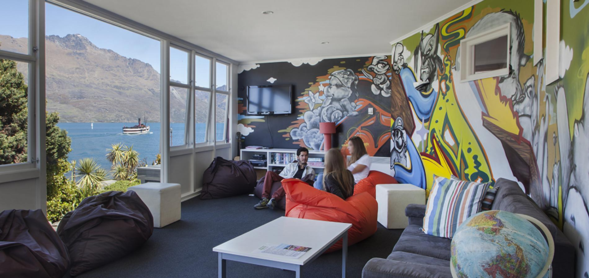

Queenstown
Backpackers
Queenstown is a popular choice for backpackers and there are numerous centrally located hostels, where the budget conscious can stay and socialise with like-minded travellers.Room types are standard with shared dorms, twins, doubles with shared bathrooms, and some have family rooms with private ensuites. Hostels often have shared kitchen and laundry facilities, as well as free Wi-Fi (for sharing your adventures on social media of course).
Nomads Queenstown
This fantastic purpose-built property is located just metres away from the lake in central Queenstown, with views of the snow-capped mountains. We have large and small dorms with or without ensuite and family suites. All dorm rooms have lockers which can hold a computer (and charge it at the same time) as well as hanging space and reading lights for every bed.
YHA Queenstown Central
Free 24 hour WiFi for YHA Members when they stay. Centrally located in the heart of buzzing Queenstown, this recently redeveloped hostel is the perfect base for your stay amidst stunning alpine scenery. Our clean, comfortable rooms have ensuite and TV, some with their own private courtyard or lake view. The friendly staff and attractive facilities will make this a stay to remember. Queenstown's nightlife with bars, clubs and restaurants, is right outside the door.Haka Lodge Queenstown
Haka Lodge Queenstown is just 200 metres from central Queenstown and a 12-minute drive from Queenstown International Airport. Guests can choose to stay in a cosy dormitory room or in the comfort of a private room. The dormitory rooms offer customized wooden bunk beds with privacy curtains, bedside lights and power points and an under-bunk storage space.
